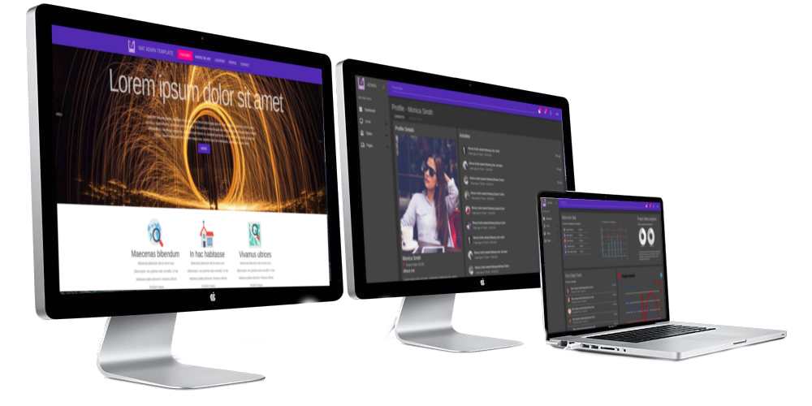
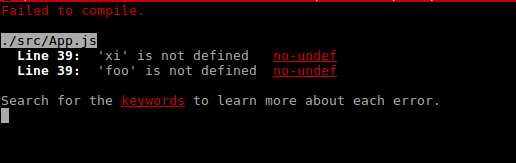
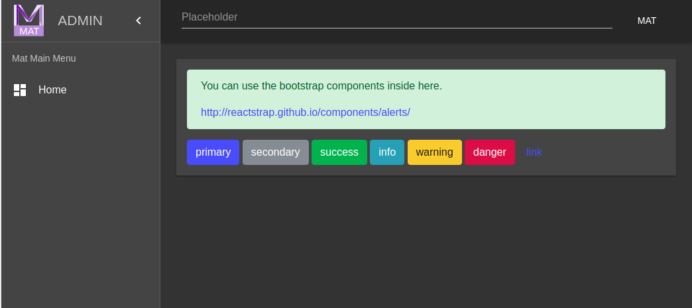

Thank you for purchasing MAT admin theme. If you have any questions about the template, please feel free to contact me via email: chanaka3d@gmail.com. Thanks very much!
MAT has a clean and minimalistic design which helps you create an awesome and powerful project. It is perfectly designed and precisely prepared. Template was built based on the latest standards and recommendations. MAT theme is powered by Twitter Bootstrap v4 and React Material Design. Please note that this documentation is dedicated to the main element of the template. With each version, I will try to develop it. But if you have any questions going beyond what is described here don't hesitate to write to me. chanaka3d@gmail.com
You’ll need to have Node >= 6 on your machine. You can use nvm (macOS/Linux) or nvm-windows to easily switch Node versions between different projects.
Project has the following folder structure at the root level
├── admin-sampleThere are three react projects ( admin-sample, mat-seed-react, and mat-seed-react-bootstrap). These projects are independent from each other. You need to run the following command for each project.
npm install
The above command will install all the required dependencies in the node_modules folder. To run the application run the following command.
npm start
With the above command it will open http://localhost:3000 in the browser.
This tool doesn’t assume a Node backend. The Node installation is only required for Create React App itself.
You don’t need to install or configure tools like Webpack or Babel.
The following scripts are available for all three react projects. You have to run these commands within each folder.
npm startRuns the app in the development mode.
Open http://localhost:3000 to view it in the browser.
The page will automatically reload if you make changes to the code. You will see the build errors and lint warnings in the console.
npm testLaunches the test runner in the interactive watch mode. See the section about create-react-app documentation running tests for more information.
npm run buildBuilds the app for production to the build folder.
It correctly bundles React in production mode and optimizes the build for the best performance.
The build is minified and the filenames include the hashes. Your app is ready to be deployed!
See the section about deployment for more information.
This project gives you a sample app with landing page, dashboards, authentication/login, etc..
./
├── config
│ ├── env.js
│ ├── jest
│ │ ├── cssTransform.js
│ │ └── fileTransform.js
│ ├── paths.js
│ ├── polyfills.js
│ ├── webpack.config.dev.js
│ ├── webpack.config.prod.js
│ ├── webpack.config.prod.txt
│ └── webpackDevServer.config.js
├── package.json
├── package-lock.json
├── Preview.png
├── public
│ ├── css
│ │ └── main.css
│ ├── favicon.png
│ ├── favicon.svg
│ ├── images
│ │ ├── ........
│ ├── index.html
│ ├── manifest.json
│ └── world-50m.json
├── README.md
├── result.html
├── scripts
│ ├── build.js
│ ├── start.js
│ └── test.js
└── src
├── App.css
├── App.js
├── App.test.js
├── errors
│ └── Page400.js
├── index.css
├── index.js
├── layouts
│ └── Main
│ ├── index.js
│ └── LeftMenu.js
├── logo.svg
├── MatComponents
│ ├── AutoComplete.js
│ ├── Labels.js
│ ├── ListNumber.js
│ └── MultipleSelect.js
├── pages
│ ├── Article.js
│ ├── Contacts
│ │ ├── ContactData.js
│ │ ├── Contact.js
│ │ ├── ContactList.js
│ │ └── index.js
│ ├── Dashboardv1
│ │ ├── AreaAnimation1.js
│ │ ├── AreaAnimation2.js
│ │ ├── CustomBarChart.js
│ │ ├── CustomChart.js
│ │ ├── index.js
│ │ ├── MailFeed.js
│ │ ├── Map.js
│ │ ├── MatTheme.js
│ │ └── PieChart1.js
│ ├── Error404.js
│ ├── Error500.js
│ ├── ForgotPassword.js
│ ├── Landing
│ │ └── Landing.js
│ ├── Login.jsx
│ ├── Projects
│ │ ├── HealthChart.js
│ │ ├── index.js
│ │ ├── ProjectData.js
│ │ ├── Project.js
│ │ └── ProjectList.js
│ ├── Register.js
│ ├── Tables
│ │ ├── index.js
│ │ ├── react-data-grid-custom.css
│ │ ├── TableBasic.js
│ │ ├── TableData.js
│ │ └── TableGrid.js
│ └── Ui
│ ├── Buttons.js
│ ├── Dialogs.js
│ ├── DraggableTree
│ │ └── index.js
│ ├── FormAdvanced.js
│ ├── FormBasic.js
│ ├── FormWizard.js
│ ├── index.js
│ └── Sortable
│ ├── Card.js
│ ├── Container.js
│ ├── index.js
│ └── ItemTypes.js
├── themes
│ └── MaterialDesignCustomTheme.js
└── utils
└── Message.js
Three default themes shipped with Mat admin theme (Dark, Light, Custom). The Dark and Light themes are
the default themes available with React Material Design. The additional custom theme is available at
src/themes/MaterialDesignCustomTheme.js.
You can switch them from the top light bulb icon.
The state of the theme is persisted to the local storage.
Dashboard is powered by Victory charing library. Victory is a pure charting library.
https://github.com/FormidableLabs/victory-chartI have created a custom theme for the victory charts. This can be located at src/pages/Dashboardv1/MatTheme.js. This custom theme is used by the dashboard charts. You can tweak the colors to achieve what you need in your dashboard charts.
The map component in the dashboard is powered by react-simple-maps. This library is a pure react library.
https://github.com/zcreativelabs/react-simple-mapsThe forms in Mat theme is powered by the React Material Design Form components. The samples in the template proved with a start point to design forms for your use cases.
Client side validation example is developed in the Login page. There is no library use to do the validation. It’s simply using state variables and setState.
The sample app is built with authentication flow login page authenticated routes etc. All secure routes are wrapped in a higher order react component.
Mat contains two seed projects to get you started
This seed project importing only React Material Design and other related components. This one has the minimum set of imports to get you started on a new project.
With this seed project you can use both React Material Design components and Bootstrap react components shipped with react-strap.
Contact me:chanaka3d@gmail.com